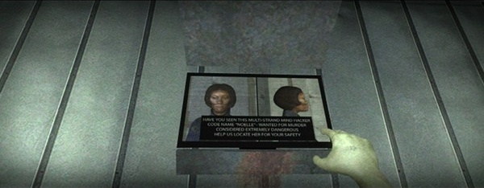
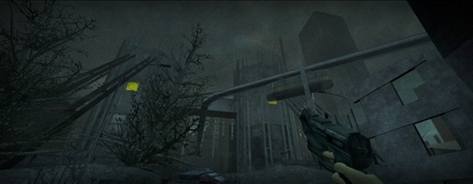

Game review by : Mr. Roboto
Year : 2011
Developer : MyoHyo
Degree of Cyberpunk visuals : Very High
Correlation to Cyberpunk themes : Very High
Rating : 8/10

If you think the world today is messed up, try living in Myo Hyori's world.
Overview: following the footsteps of games like Doom 2, Quake, and the Unreal series, Half Life 2 released tools, like the SDK ("Software Development Kit"), to allow talented hackers and modders to literally change the game. They have made mods and conversions that allow for realistic or overpowering weapons, deathmatch bots, and whole new dytopic worlds to explore.
G String is the latest mod that throws us into a cyberpunk world. Against a background of a dying Earth dominated by civil unrest against air-supply corporations, you'll be traveling and fighting through corporate fascists, berserk robots, and your own mutations as you join the "War Against Money". Just be prepared for a few surprises along the way.
The Story: dwindling oil supplies spark a nuclear war in the Middle East, leaving what little bit remains unreachable and unusable. This triggers massive earthquakes that shake North America and sink Asia, while Africa and South America are raped of their natural resources. The polar ice caps didn't melt, they just moved to Europe. The fallout, pollution, and deforestation has made the air poisonous so that people who wander outside must wear environmental suits with air-filtration systems or risk destroying their lungs. Whole cities are encased in domes that allow large air filtration and recycling systems make the air a bit more breathable. But as the companies that run the systems collect all currency in the world, some have begun to fight back against those who finance them.
You are Myo Hyori, a Korean girl living in the North American Union. Your family moved here to TokyoTwice when tsunamis sink Asia. You wake up one morning discovering that you can shoot fireballs and telekinetically move objects... and you're not the only one with such abilities. The corporations view you and your mutated kind as a threat to their profit margins, and are taking steps to stop you before you can put them out of business.

Another "mutant" that's out there... somewhere. If you can meet up with her maybe you can stop the madness that's killing this planet.
See the sights, hear the tunes. You start off in your room in the suburban slums with your television on fire. Once you make it outside you get to travel to many different places. From back alleys to main streets, rooftops to sewers, squeezing through ventilation ducts to precariously balanced on a narrow ledge some fifty stories above the streets, you'll be traveling across some interesting and dangerous terrain. Along the way, you may encounter some of the living who may be resistance or corporate. Corporate types will shoot you without provocation, so shoot them back preferably before they start shooting. DON'T SHOOT THE RESISTANCE FIGHTERS! They're only trying to help (even if they do get in the way), and shooting them will not only make them shoot back, but they may call you some nasty things as well.

Keep your ears open as well as your eyes... or you might miss something.
Sounds also play a role heightening the atmosphere. Distant gunfire, screams of agony from behind closed doors,... even announcements from the hidden public address system can give you encouragement, or a warning of what's ahead in your travels. An eerie psychic whisper in your head can be expected as well.
Most of the music is the standard ambient background music, but some spots (like a nightclub in the slums) have J-pop blaring through your speakers, even while you're engaged in combat. If you find the right spot while traveling through the ruins, you'll even get to hear the Zager & Evans tune "In the Year 2525".
At several points in your adventure you'll be subjected to a "mindfuck". Some you just have to endure for a minute or two, others you will need to find an escape.
Future imperfect. MyoHyo said she spent some five years developing this mod. For the most part, the quality shows through. Even so, there are some technical issues. While making my way down from a roof, I kill two corp guards only to have the game abort with a "no free edicts" error (or something similar). After restarting and luring one of the guards to the door and killing him, I was able to continue without any further major errors. But the ladders gave me the most problems, especially when trying to jump across a deep drop off one. I did make it, after a few deaths, but it's still hard for me to do consistently. Also, throwing fireballs requires that you press forward and backward simultaneously. Not the hardest thing to do with a keyboard, but it would have been better if you can bind that function to a single key or button for joystick/gamepad users.
MyoHyo is currently working on a version 2.0 that, hopefully, will address these issues. She's looking for a couple of voice actors, so v2 looks like it may be an expanded edition. Just keep an eye on her site to see when it comes out, along with the soundtrack.
Conclusion: G String has what it takes to be a classic HL2 mod. MyoHyo has certainly created a serious cyberpunk trip for her first version. Can't wait to see what 2.0 has in store.